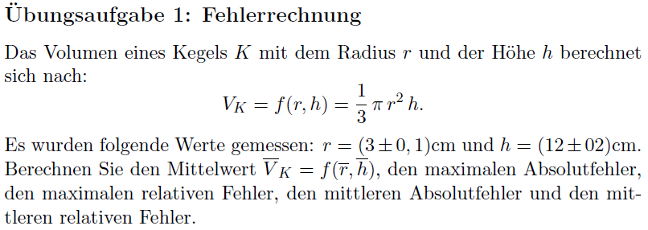
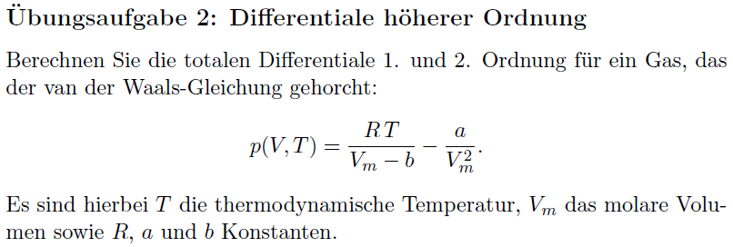
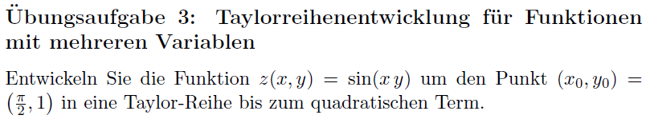

Die Übungsaufgaben sind dazu gedacht, Ihnen zu zeigen, wie die Methoden, die in der
Vorlesung vorgestellt wurden, in Anwendung gebracht werden. Sie erhalten die Lösungen
hierzu entweder in den Tutorien oder auf der ISIS-Seite des Kurses als Dokument oder
Lehrvideo.
1. Übungsaufgabe

Übungsblatt 12; Übungsaufgabe 1
Video zu Übungsaufgabe 1
Fehlerrechnung
2. Übungsaufgabe

Übungsblatt 12; Übungsaufgabe 2
Video zu Übungsaufgabe 2
Differentiale höherer Ordnung
3. Übungsaufgabe

Übungsblatt 12; Übungsaufgabe 3
Video zu Übungsaufgabe 3
Taylorreihenentwicklung einer Funktion zweier Variablen